date time year month doy dow death cvd resp temp dptp
1 1987-01-01 1 1987 1 1 Thursday 130 65 13 -0.2777778 31.500
2 1987-01-02 2 1987 1 2 Friday 150 73 14 0.5555556 29.875
3 1987-01-03 3 1987 1 3 Saturday 101 43 11 0.5555556 27.375
4 1987-01-04 4 1987 1 4 Sunday 135 72 7 -1.6666667 28.625
5 1987-01-05 5 1987 1 5 Monday 126 64 12 0.0000000 28.875
6 1987-01-06 6 1987 1 6 Tuesday 130 63 12 4.4444444 35.125
rhum pm10 o3 pm10_laggeg
1 95.500 26.95607 4.376079 NA
2 88.250 NA 4.929803 NA
3 89.500 32.83869 3.751079 NA
4 84.500 39.95607 4.292746 NA
5 74.500 NA 4.751079 NA
6 77.375 40.95607 6.334412 NAAdvanced Environmental Modelling
Distributed non-linear lag models, spatially varying coefficients, and spatial DLNMs
Aug 21, 2026
Advanced Environmental Models
Distributed non-linear lag models
Spatially varying coefficients
Spatial DLNMs
Distributed non-linear lag models
An exposure event is frequently associated with a risk lasting for a defined period in the future.
The risk at a given time is assumed a result of protracted exposures experienced in the past.
Examples include, drugs, carcinogens, etc.
Challenge: The risk should be modelled in terms of contributions depending on intensity and timing of the exposure events. - Can use bi-dimensional association (interaction).
Example 1: Lung cancer and radon exposure

Example 2: PM10 in Chicago
Example 2: PM10 in Chicago
What are the main assumptions here? (Spoiler: independence!!)
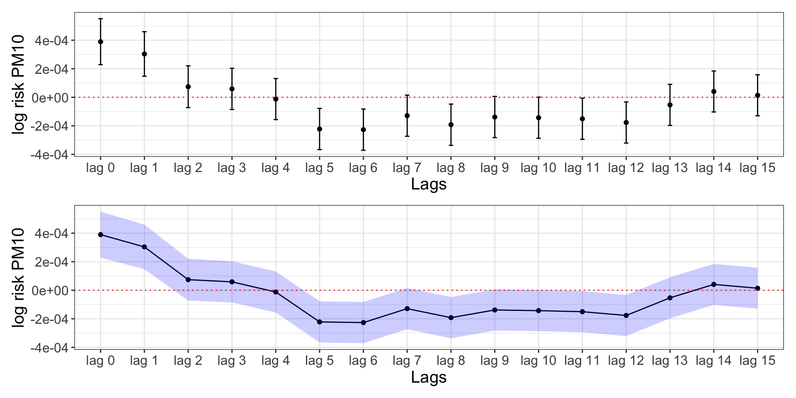
Distributed linear lag models
The unconstrained distributed lag model of order \(q\) is:
\[Y_t = \beta_0 + \beta_{10}X_t + \beta_{11}X_{t-1} + \dots+ \beta_{1q}X_{t-q} + \epsilon_t\]
\(\beta_{1\ell}\) is the effect at lag \(\ell=0, 1, \dots q\) and \(\epsilon_t\) an error term.
The overall impact for a unit change in \(X\) is given by \(\sum^q_{\ell=0}\beta_\ell\).
Example 2: PM10 in Chicago
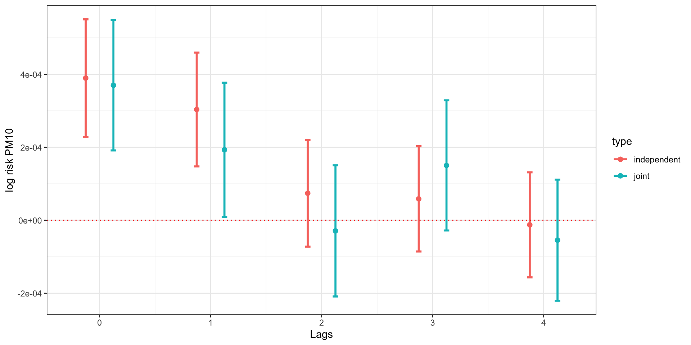
Considerations
Easy implementation when lags are few; overparametrized when we want to assess a lot of lags.
Collinearity issues: The exposure is likely to be highly correlated with the values of the previous/after days. Weird behaviours in the point estimates (surprising protective effects), variance inflation.
Alternative: impose some constraints!
A constant effect within lag intervals.
Average of the exposures in the previous \(L\) day.
Describing the coefficients with a smooth curve using continuous functions such as splines, polynomials, and other basis functions.
The idea: \(\beta_{\ell}\) can be modelled using a basis function.
Polynomial DLM
Let \(\beta_\ell = \sum_j^p\tau_j\ell^j, \;\;\; \ell = 0, \dots, q\) , lets write it for 2 lags using a 3rd degree polynomial to see it explicitly:
\[\begin{align}Y_t &= \beta_0 + \beta_{10}X_t + \beta_{11}X_{t-1} + \beta_{12}X_{t-2} + \epsilon_t\\\beta_{10} &= \tau_0, \; \beta_{11} = \tau_0 + \tau_1 + \tau_2 + \tau_3, \; \beta_{12} = \tau_0 + \tau_1 2 + \tau_2 2^2 + \tau_3 2^3\end{align}\]
and we can modify as per first lecture to model more localized structures using: \(\beta_\ell = \sum_j^p\tau_j\ell^j + \sum_k^K\nu_k(\ell-\kappa_k)^p_+\), thus:
\[\begin{align*}\beta_{10} &= \tau_0 + \nu_1(0-\kappa_1)^3_+ + \dots + \nu_K(0-\kappa_K)^3_+, \\\beta_{11} &= \tau_0 + \tau_1 + \tau_2 + \tau_3 + \nu_1(1-\kappa_1)^3_+ + \dots + \nu_K(1-\kappa_K)^3_+, \\\beta_{12} &= \tau_0 + \tau_1 2 + \tau_2 2^2 + \tau_3 2^3 + \nu_1(2-\kappa_1)^3_+ + \dots + \nu_K(2-\kappa_K)^3_+\end{align*}\]
and similarly we can penalize it can estimate the penalised spline distributed lag estimate of \(\beta_{\ell}\)
Polynomial DLM in R: Chicago
v1.l1 v1.l2 v1.l3 v1.l4 v1.l5
[1,] NA NA NA NA NA
[2,] NA NA NA NA NA
[3,] NA NA NA NA NA
[4,] NA NA NA NA NA
[5,] NA NA NA NA NA
[6,] NA NA NA NA NA v1.l1 v1.l2 v1.l3 v1.l4 v1.l5
[1,] 491.4144 234.4814 171.9688 138.7484 117.62724
[2,] 472.4144 228.8892 164.5070 132.7768 112.95375
[3,] 462.4144 217.7637 151.6641 120.3782 101.30370
[4,] 470.7431 214.8555 146.7695 115.3677 96.77336
[5,] 466.7431 214.2852 143.4258 111.3702 92.93659
[6,] 476.1822 224.1150 151.3660 118.8315 100.88929
[7,] 459.4839 217.5073 142.4543 108.5967 90.34264Polynomial DLM in R: Chicago
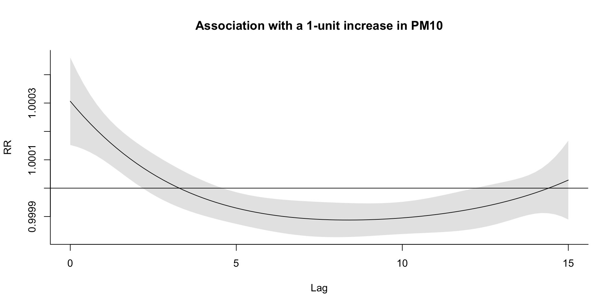
What is the main assumption here? Can we relax it?
Extension to distributed non-linear lag models
We know that temperature and mortality have a U-shape relationship.
We know that high temperature has a lag effect on mortality.
Can we define models to combine these two components?
The idea: To calculate this bi-dimensional relationship, we need a basis function that combines the basis function in the lag dimension and the basis function in the exposure dimension. - We can use a cross-basis function.
Linear-by-constant

Spline-by-constant

Step-by-step

Spline-by-spline

Example 3: Temperature in Chicago
cb2.pm <- crossbasis(chicagoNMMAPS$pm10,
lag = 1, argvar = list(fun = "lin"),
arglag = list(fun = "strata")
)
varknots <- equalknots(chicagoNMMAPS$temp, fun = "bs", df = 5, degree = 2)
lagknots <- logknots(10, 3)
cb2.temp <- crossbasis(chicagoNMMAPS$temp, lag = 10, argvar = list(
fun = "bs",
knots = varknots
), arglag = list(knots = lagknots))
model_dlm2 <- mgcv::gam(death ~ cb2.pm + cb2.temp + s(time) + s(month) + dow,
family = poisson(), chicagoNMMAPS
)
pred2.temp <- crosspred(cb2.temp, model_dlm2, cen = 21, by = 1)Example 3: Temperature in Chicago
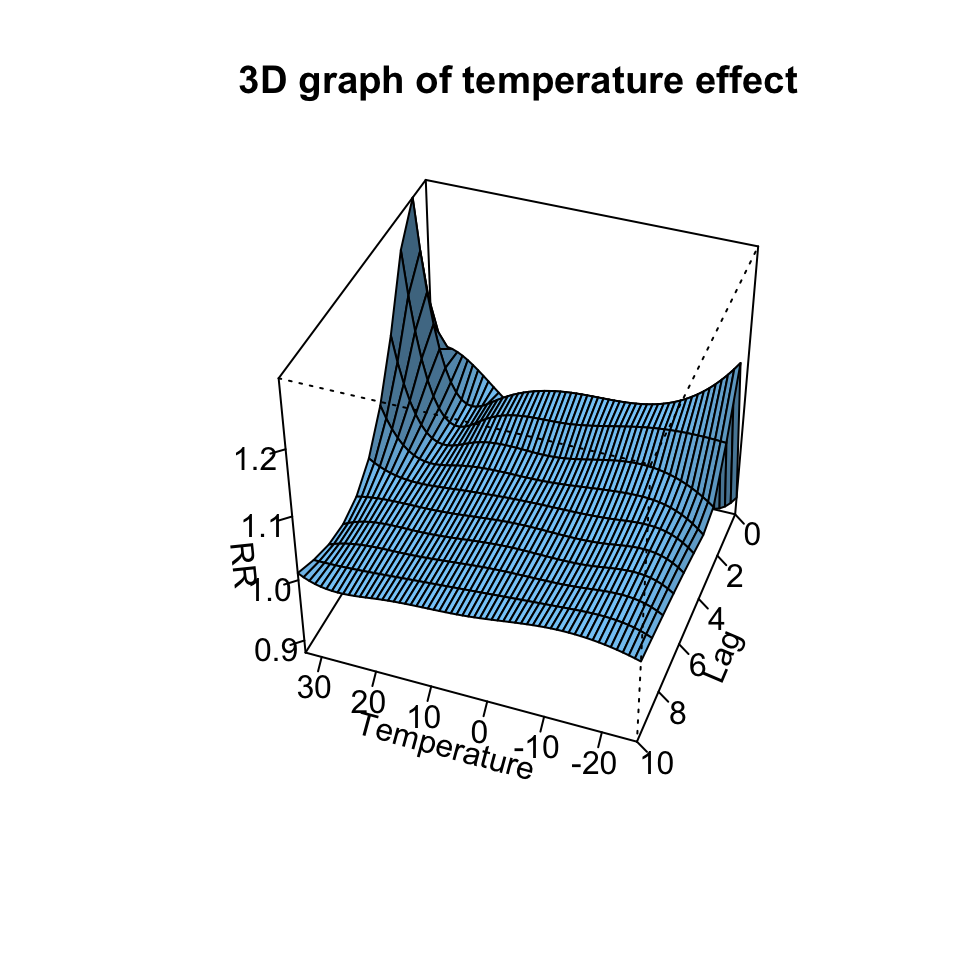
Example 3: Temperature in Chicago
Example 3: Temperature in Chicago
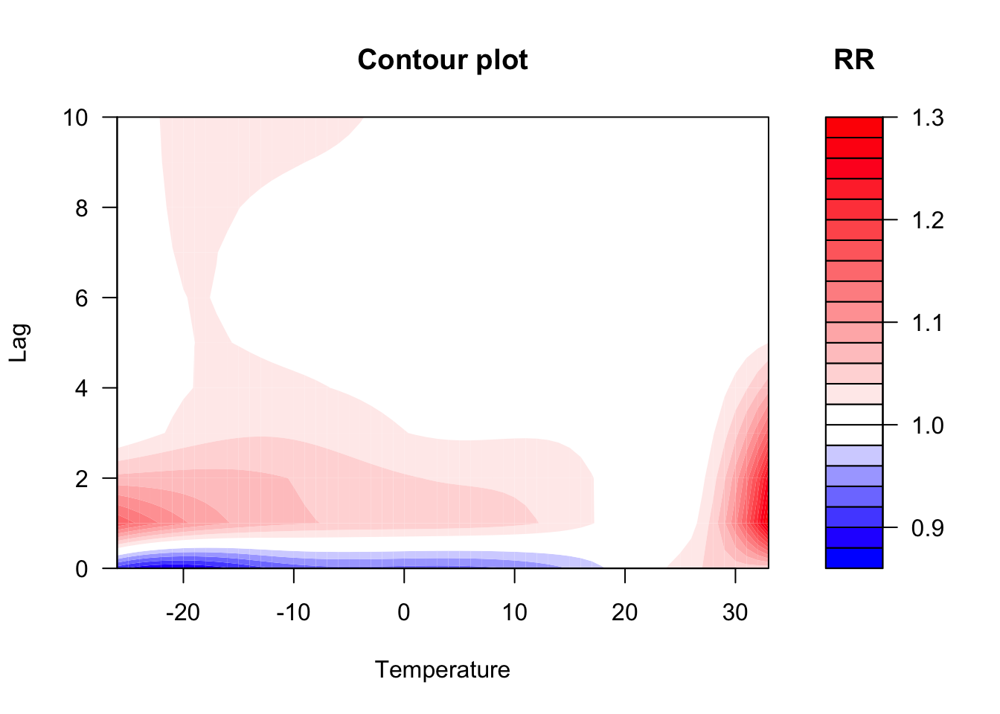
Example 3: Temperature in Chicago
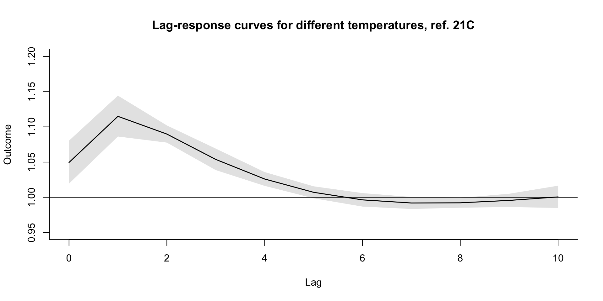
Example 3: Temperature in Chicago
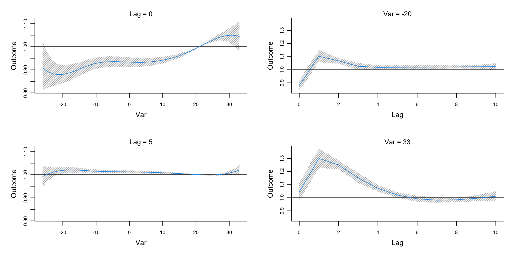
Spatially varying coefficients
So far, we assumed a single effect of an exposure across the study region.
However, different populations might experience different vulnerabilities to the effect of the exposure.
If these vulnerabilities have spatial structures, then the effect of the exposure will vary in space.
Spatial effect modification or spatial interaction.
Example 1: Temperature and COPD
3\(^{\text{rd}}\) cause of death, 3.17 million deaths in 2015 globally,
In England, 115,000 emergency admissions and 24,000 deaths per year.
COPD exacerbations: Bacteria, viruses and air-pollution.
The role of temperature is unclear.

Example 1: Temperature and COPD
Typically U-shaped relationship between temperature and health.
Individual effect modifiers: age, sex, chronic conditions.
Temporal variation of the effect (adaptation).
Environmental effect modifiers: green space, urban heat island.
Spatial vulnerabilities to heat exposure.
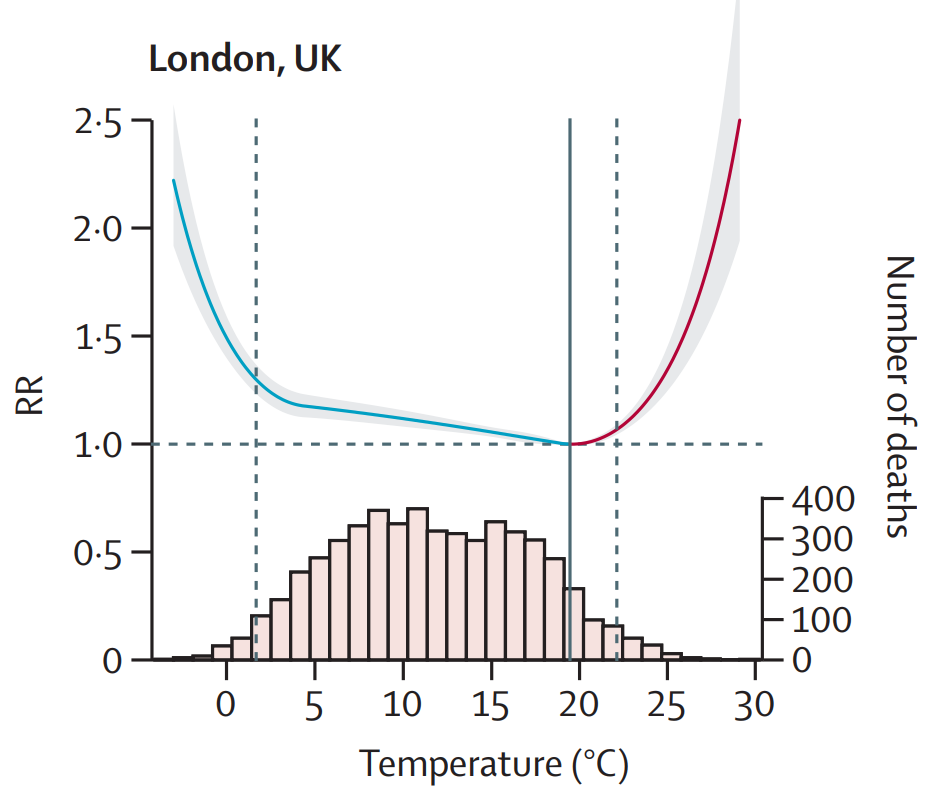
Example 1: Temperature and COPD

Example 1: Temperature and COPD
\[ Y{ijk} \sim \text{Poisson}(\mu_{ijk})\\ \log(\mu_{ijk}) = \alpha_1 I(X_{1i}<c)X_{1i} +\\ \qquad \qquad \qquad \qquad \alpha_{2s} I(X_{1i}\geq c)X_{1i} + \sum \beta_mZ_{mi} + u_j + w_k \\ \alpha_{2s} = \alpha_2 + \sum \gamma_l H_l + b_s \]
Where should we put priors?
How should we select the priors?
Example 1: Temperature and COPD

Example 1: Temperature and COPD

Example 1: Temperature and COPD
| Effect modifier | Percentage increase | Pr |
|---|---|---|
| Green space | -1.46 (-6.99, 4.39) | 0.30 |
| Average temperature | -0.41 (-1.49, 0.71) | 0.22 |
| IMD Q1 | 1 | - |
| IMD Q2 | 0.81 (-1.16, 3.08) | 0.78 |
| IMD Q3 | 1.57 (-0.76, 4.06) | 0.91 |
| IMD Q4 | 0.75 (-1.68, 3.36) | 0.71 |
| IMD Q5 | 1.62 (-1.31, 4.49) | 0.85 |
| Predominantly Rural | 1 | - |
| Urban with significant rural | -0.79 (-3.10, 1.51) | 0.25 |
| Predominantly urban | -1.57 (-4.16, 0.96) | 0.12 |
Example 1: Temperature and COPD

Modelling the spatially varying non-linear effects of heat exposure
Main issues: (1) data sparsity, (2) spatial correlation

The model
We can write: \[ O_i \sim \text{Poisson}(\lambda_i E_i) \\ \log \lambda_i = \alpha + \color{red}{\sum_j(\beta_{1j} + \delta_{ij})X_{1i}} + \beta_2 X_{2i} + \dots + \beta_k X_{ki} + \theta_i + \phi_i \\ \theta_i \sim \text{Normal}(0,\sigma_{\theta}^2)\\ \phi \sim \text{ICAR}(W, \sigma^2_{\phi}) \\ \color{red}{\delta_j \sim \text{ICAR}(W, \sigma^2_{\delta_j})} \] And a step further: \(\text{heat-risk}_i = \gamma_0 + \sum \gamma_i Z_i + w_i\)
Beyond linear models: Case study

Beyond linear models: Effect modifiers

Spacetime-varying coefficients: Heatwaves in Greece
\[ O_i \sim \text{Poisson}(\lambda_i E_i) \\ \log \lambda_{it} = \alpha + \color{red}{(\beta_{1} + \delta_{i} + u_t)X_{1it}} + \\\beta_2 X_{2it} + \dots + \beta_k X_{kit} + \theta_i + \phi_i + v_t \\ \theta_i \sim \text{Normal}(0,\sigma_{\theta}^2)\\ \phi, \delta \sim \text{ICAR}(W, \sigma^2_{*}) \\ \color{red}{u, v \sim \text{RW2}(\sigma^2_{*})} \]
Overall results
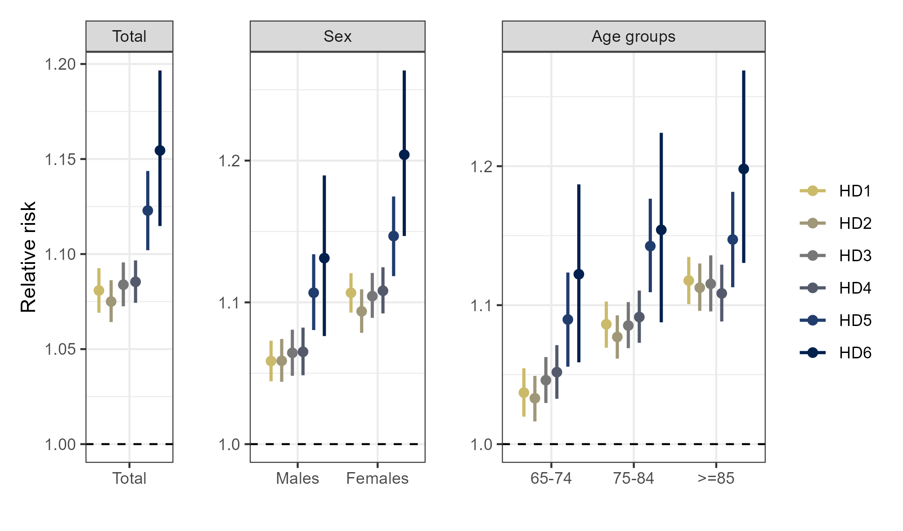
Results in space

Results in time
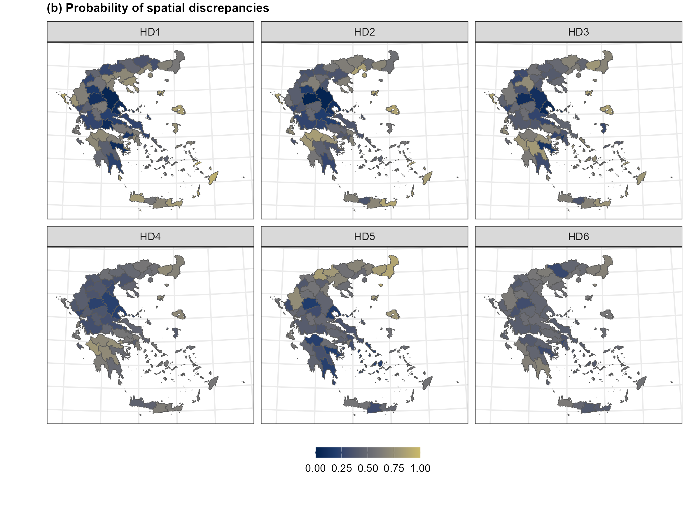
A final (I promise) example
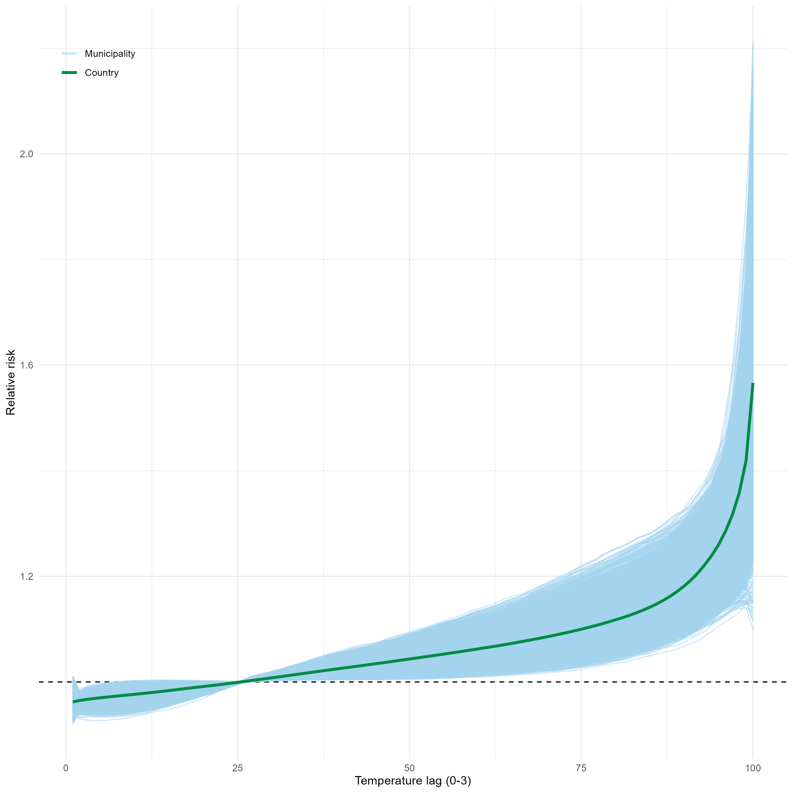
A final (I promise) example

A final (I promise) example
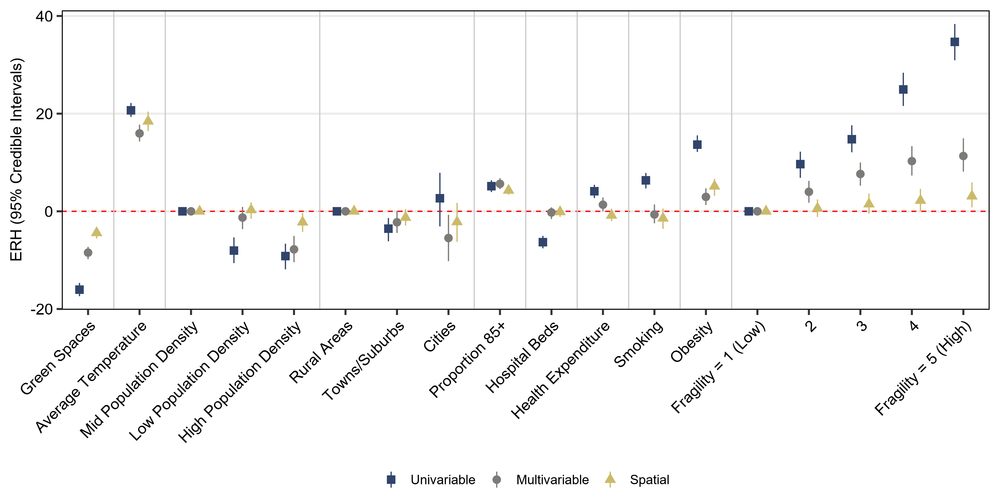
Summary
- Introduction to distributed linear (and non-linear) lag models
- Introduction to spatially varying coefficients
- Spatial DLNMs
- Examples using air-pollution, radon and temperature
Getting ready for the lab
The lab for this session
This lab will involve taking the spatiotemporal and non-linear models from the Advanced Environmental Modelling lecture and fitting them in
INLA, which is what makes models of this size practical to run at all.During this lab session, we will:
- Explore dengue case data for 645 Brazilian micro-regions from 2009 to 2024, alongside temperature, rainfall and humidity from ERA5;
- Build the neighbourhood matrix that
INLAneeds, and fit a spatiotemporal model with seasonal, long-term and BYM2 spatial random effects; - Allow the effects of temperature and rainfall to vary across space, and map the exceedance probabilities; and
- Fit a distributed lag non-linear model in
INLA, so that the effect of temperature can be both non-linear and delayed.
Questions?